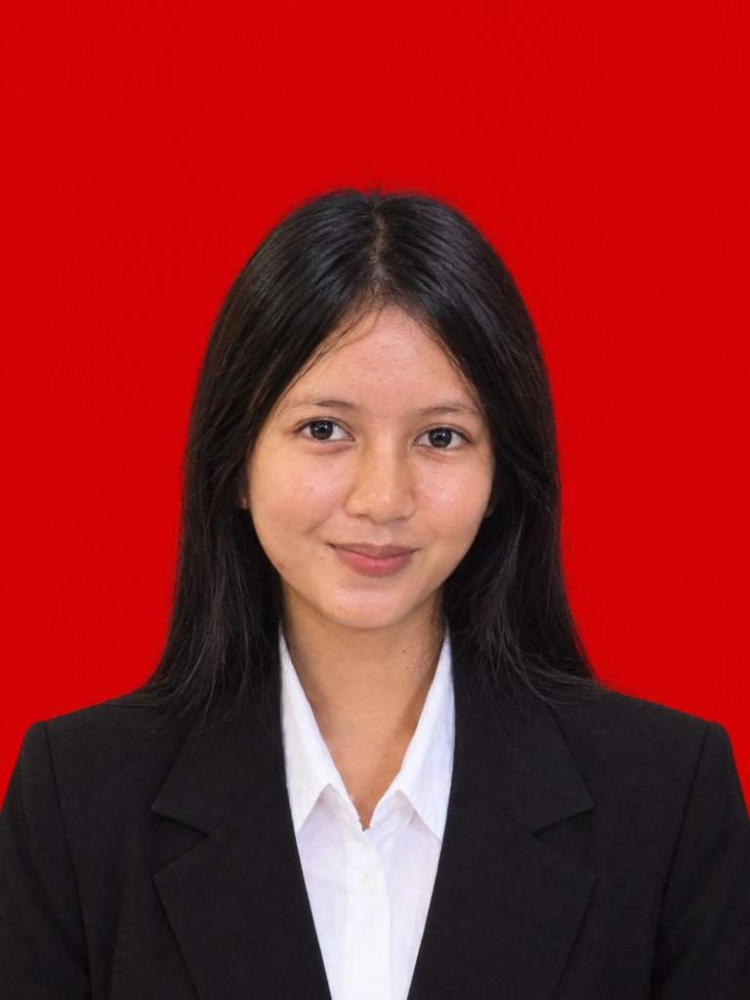

|
 |
Niken Rifenti Asiana SitohangSarjana Informatika
Email: niken090506@gmail.com
|
Pendidikan
Sarjana Informatika | IPK : 3,55/4.00
Pengalaman
Divisi Pendidikan | Organisasi
Program Kreativitas Mahasiswa (PKM) | Kompetisi
GEMASTIK | Kompetisi
Inaugurasi and Graduation | Panitia |
KeahlianProgramming
Tools & Design
|